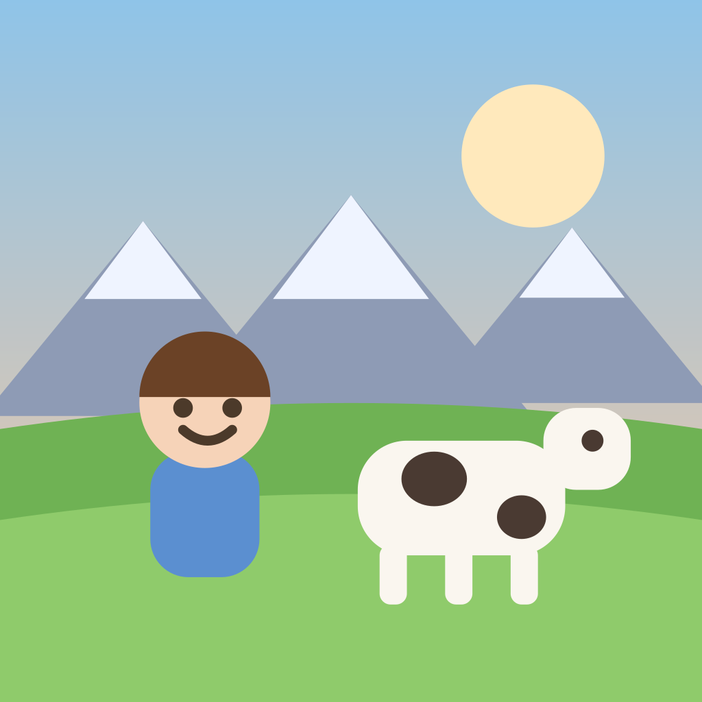
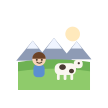
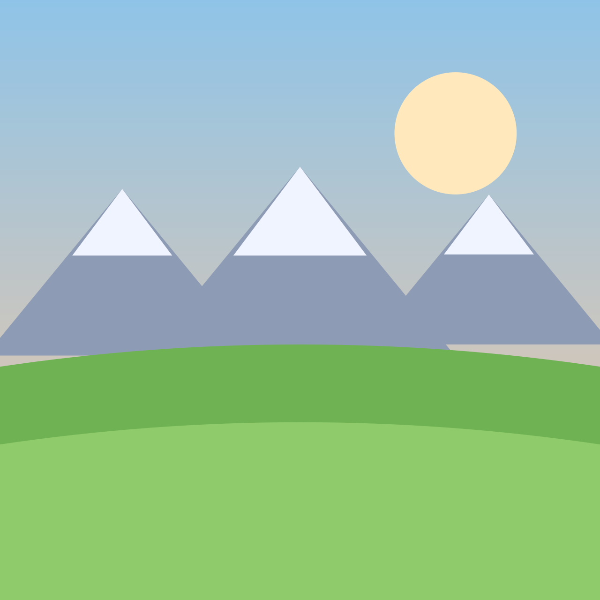

Launcher masks

rounded 128
circle 128
squircle 128
Density check
192 xxxhdpi
96 xhdpi
72 hdpi
48 mdpi
32 worst case
Adaptive foreground (safe zone)

fg + bg, circle mask

splash / feature graphic